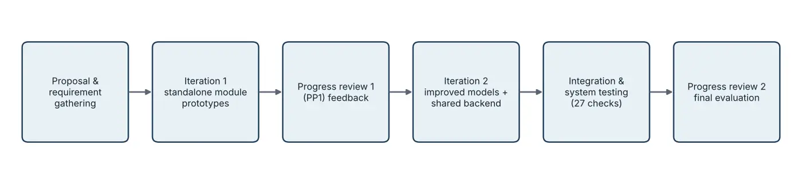
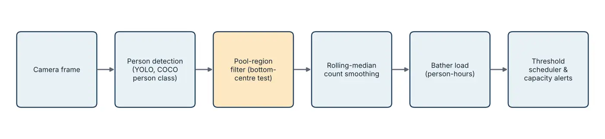
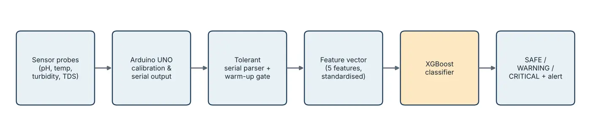
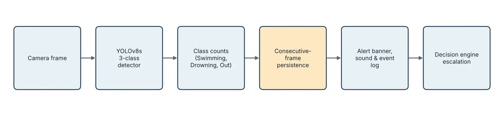
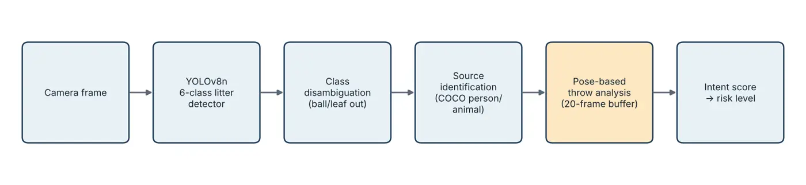
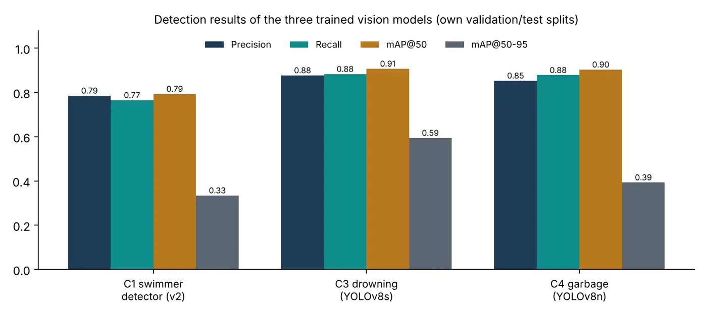

01 · Literature survey
What existing work already does
Public-health guidance from the World Health Organization treats drowning as a leading, preventable cause of injury death and recognises bather load as a key driver of disinfection demand in pool water. Pool-water codes recommend continuous monitoring, but most facilities still test by hand a few times a day.
Crowd counting has moved from density-map regression to fast object detectors such as the YOLO family, which work well on dense outdoor crowds but are rarely tested on partly submerged swimmers under glare.
Water-quality IoT studies show that low-cost pH, turbidity and TDS sensors with microcontrollers can stream readings to the cloud, and that tree-based classifiers such as Random Forest and XGBoost classify water status accurately, though usually on small or rule-labelled datasets.
Drowning detection research ranges from early background-modelling systems at real pools to modern deep detectors trained on staged footage. Commercial products such as Poseidon rely on dedicated underwater cameras and are priced for large facilities. The behaviour they detect is well described by the Instinctive Drowning Response: silent, vertical, head low, lasting 20 to 60 seconds.
Litter detection has been studied for beaches, streets and the sea (for example the TACO dataset), and pose estimators such as MediaPipe make human action analysis possible on ordinary hardware, but they have not been combined to explain how litter entered a pool.
| Approach | Safety | Water quality | Cleanliness | Usage / occupancy | Cross-module decisions | Low-cost hardware |
|---|---|---|---|---|---|---|
| Commercial drowning systems (e.g. Poseidon) | ✓ | ✗ | ✗ | ✗ | ✗ | ✗ |
| IoT water-quality monitors | ✗ | ✓ | ✗ | ✗ | ✗ | ✓ |
| Robotic / automatic pool cleaners | ✗ | ✗ | ✓ | ✗ | ✗ | ✗ |
| General crowd-counting research | ✗ | ✗ | ✗ | ✓ | ✗ | ✓ |
| AI BASED SMART Swimming Pool Monitoring and Maintenance System (this project) | ✓ | ✓ | ✓ | ✓ | ✓ | ✓ |
02 · Research gap
Each strand works alone
Reliable detectors, inexpensive sensors and clear hygiene guidance all exist. What does not exist is a system that brings them together at a pool.
No shared camera
No reviewed system uses one camera for safety, occupancy and cleanliness, so a facility wanting all three needs three products.
No context between signals
No system lets one signal change the meaning of another, such as treating borderline water as urgent when bather load is high.
Nothing for small operators
Proven products depend on specialised hardware, leaving mid-sized hotels, schools and clubs in Sri Lanka without an affordable option.
| Component | Specific gap addressed |
|---|---|
| Crowd-aware maintenance | No system converts camera occupancy into bather load and then into prioritised maintenance actions, while excluding people on the deck. |
| Water quality | Low-cost monitors rarely keep calibration across power loss, rarely flag offline or unsettled sensors honestly, and seldom question near-perfect classifier scores. |
| Drowning detection | Most deep-learning work stops at frame-level detection; few systems confirm an alert over time or run from an ordinary above-water camera inside a wider monitoring platform. |
| Garbage & intent | Litter detectors do not separate litter from pool toys and leaves, and none estimate whether a nearby person threw the item. |
03 · Research problem
The question we asked
Pool operators lack a continuous, affordable and combined view of swimmer safety, water condition, cleanliness and usage. Observations are rarely recorded, and decisions are made without the context the other observations could supply.
Sub-problems
- Count only the people in the water and turn usage into maintenance actions.
- Read water parameters continuously and keep the readings trustworthy.
- Recognise the drowning posture quickly without single-frame false alarms.
- Detect litter, ignore legitimate objects, and estimate who threw it.
04 · Research objectives
Main and specific objectives
Select a person detector by measured comparison, count only people inside the pool region, convert counts into person-hours of bather load, and derive ranked maintenance tasks and capacity levels.
Build an Arduino sensor node with persistent calibration, reject unsettled or missing readings, and compare classifiers for SAFE / WARNING / CRITICAL with a focus on catching CRITICAL cases.
Fine-tune a YOLOv8 detector for Swimming, Drowning and Person out of water, evaluate it with standard detection metrics, and design a temporal rule that produces a SAFE or DANGER status.
Train a pool-litter detector, exclude balls and leaves, identify the nearest likely source, and estimate throwing intent from pose landmarks to set a risk level.
Share one camera stream across three vision modules, keep each module independent behind a shared state, fuse their outputs in one transparent decision engine, and present everything on a real-time dashboard with alerts and a PDF session report.
05 · Methodology
How we built it
We worked iteratively. Each member first built a standalone prototype of their component; after the first progress review we improved the models, then connected all four modules to a shared backend, decision engine and dashboard, and verified the whole system with automated checks.






Key results
- Crowd: a COCO-pretrained detector found 9 people where the custom swimmer model found 1, so the pretrained model was adopted for counting.
- Water: XGBoost caught every CRITICAL test sample (Random Forest missed one), although the dataset is small and rule-labelled.
- Drowning: precision 0.877, recall 0.883, mAP@50 0.907 after 100 epochs.
- Garbage: precision 0.853, recall 0.878, mAP@50 0.903 on six classes.
- System: all 27 automated checks passed with all four modules loaded.
06 · Technologies used
Technology stack
| Layer | Technologies |
|---|---|
| Computer vision | Ultralytics YOLOv8 / YOLO11, OpenCV, MediaPipe Tasks (pose landmarker) |
| Machine learning | XGBoost, scikit-learn (Random Forest, StandardScaler, LabelEncoder), pandas, NumPy |
| Hardware / IoT | Arduino UNO, analogue pH probe, turbidity sensor, TDS sensor, DS18B20 temperature sensor; Wokwi and ESP32 for early prototyping |
| Backend | Python, Flask, Flask-SocketIO, ReportLab (PDF session reports) |
| Frontend | Next.js dashboard, HTML / CSS |
| Training & data | Kaggle GPU notebooks, Roboflow Universe datasets, Google Colab |
| Collaboration | Git and GitHub (one branch per component, plus development and main), VS Code |